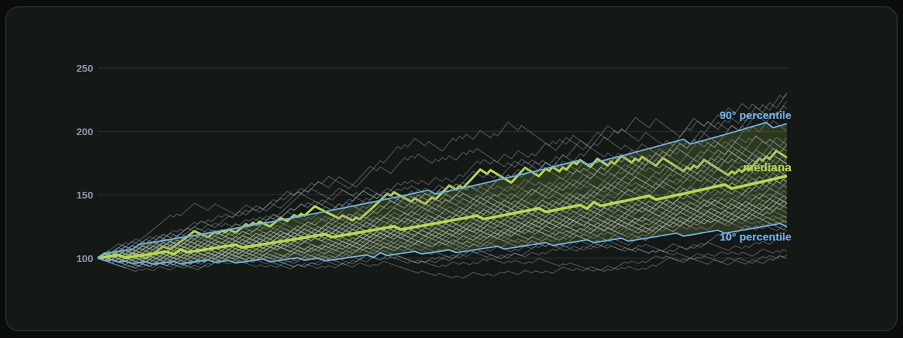

Materiale educativo, non consulenza finanziaria. Il trading con leva su forex, CFD e futures comporta un rischio elevato: puoi perdere tutto il capitale. Numeri, esempi e simulazioni non prevedono risultati futuri.
Un solo passato non basta: simuliamo migliaia di futuri possibili.
Un backtest mostra una sola sequenza di operazioni, quella che è realmente accaduta. Con un ordine diverso, lo stesso sistema avrebbe avuto un altro drawdown. Le statistiche sono uguali, il percorso no. E il futuro sarà un'altra sequenza ancora. Serve quindi vedere molte sequenze possibili.
Ecco come funziona. Primo: parti dalle statistiche del sistema, cioè win rate, guadagno medio e perdita medio. Secondo: generi una sequenza casuale di trade, dove ognuno vince o perde con la probabilità data. Terzo: calcoli l'andamento del conto con il tuo rischio per trade, e registri capitale finale e drawdown. Quarto: ripeti migliaia di volte, e osservi la distribuzione dei risultati.

Vediamo il metodo che prende forma, un passo alla volta. Una sola simulazione: duecento operazioni del nostro sistema di esempio, a rischio uno per cento. Un possibile futuro. Ne aggiungiamo altre cinque. Le stesse regole, ma ogni percorso è diverso. Con sessanta percorsi il ventaglio comincia a prendere forma: alcuni finiscono molto in alto, altri meno. Con centinaia di percorsi si distinguono tre linee: la mediana, e il decimo e il novantesimo percentile, che racchiudono l'ottanta per cento dei casi.
| Mostrare la gamma di esiti | |
| Stimare drawdown e rovina | |
| Confrontare livelli di rischio |
| Prevedere il futuro | |
| Correggere statistiche sbagliate | |
| Considerare cambi di mercato |
Cosa può e cosa non può fare. Può mostrare la gamma di esiti possibili, stimare drawdown e probabilità di rovina, e confrontare livelli di rischio diversi. Non può prevedere il futuro, non corregge statistiche sbagliate, e non considera i cambi di regime del mercato. È uno strumento per capire l'ordine di grandezza del rischio, non una palla di vetro.
Non chiederti cosa succederà. Chiediti cosa può succedere.
Mediana, percentili e cosa significa «caso brutto».
Tre numeri da guardare in una simulazione. La mediana: il risultato in mezzo. Metà dei percorsi fa meglio, metà fa peggio. Il decimo percentile: solo un percorso su dieci va peggio di così. È il caso sfortunato. Il novantesimo percentile: solo uno su dieci va meglio. È il caso fortunato.
| Misura | Risultato |
|---|---|
| 10° percentile | circa +28% |
| Mediana | circa +65% |
| 90° percentile | circa +112% |
| Percorsi che finiscono sotto lo zero | meno dell'1% |
| Drawdown massimo tipico | circa −10% |
Simulazione illustrativa: non è una previsione.
| Caso sfortunato (10°) | +28% |
| Tipico | +65% |
| Drawdown tipico | −10% |
| Caso sfortunato (10°) | +59% |
| Tipico | +161% |
| Drawdown tipico | −19% |
Cosa succede raddoppiando il rischio? Con l'uno per cento: caso sfortunato più ventotto, tipico più sessantacinque, drawdown tipico meno dieci. Con il due per cento: caso sfortunato più cinquantanove, tipico più centosessantuno, drawdown tipico meno diciannove. Il guadagno tipico sale di due volte e mezzo, il drawdown raddoppia. Ma la scelta dipende da quanto sopporti, non dal risultato più alto.
Puoi ripetere questa simulazione con i tuoi numeri, inserendo win rate, rapporto, rischio e numero di operazioni. Sul sito riskly punto trade ci sono calcolatori gratuiti. Dichiaro che sono miei, come tutti i prodotti Riskly. Ma va bene qualunque strumento, anche un foglio di calcolo: l'importante è usare numeri onesti.
La mediana ti dice cosa aspettarti. Il decimo percentile ti dice cosa sopportare.
Quanto è probabile toccare il punto da cui non vuoi tornare indietro.
Prima di tutto bisogna definire la rovina. Non è sempre azzerare il conto. La definisci tu, in anticipo. Per esempio: perdere il trenta per cento del capitale iniziale. La probabilità di rovina è la percentuale di percorsi simulati che toccano quella soglia.
| Rischio per trade | Probabilità | Lettura |
|---|---|---|
| 0,5% | ~0% | molto sicuro |
| 1% | ~0% | molto sicuro |
| 2% | ~0,7% | bassa |
| 3% | ~4% | da non ignorare |
| 5% | ~17% | rischio alto |
Sistema: 45% di vincite, +1,8 R / −1 R. Simulazione, non previsione.
Attenzione: la rovina dipende dal sistema. Con un win rate più basso la probabilità sale molto, e lo vedremo nello stress test. Se il vantaggio è sovrastimato, le stime sono ottimistiche. Un sistema senza vantaggio ha una rovina molto più alta. E non è mai zero: anche con un rischio basso, un'ipotesi sbagliata può rovinare tutto.
La rovina non è un evento. È una probabilità che scegli tu con il rischio.
E se le tue statistiche fossero peggiori di quelle misurate?
Perché stressare un piano? Perché le tue statistiche sono stime, e con pochi trade possono essere ottimistiche. Perché i mercati cambiano e un vantaggio può ridursi nel tempo. E perché i costi reali possono essere più alti di quelli previsti.
| Scenario | Drawdown tipico | Rovina (−30%) | Chiudono sotto zero |
|---|---|---|---|
| Base: 45% vinte | −10% | ~0% | ~1% |
| Win rate 40% | −13% | ~0,4% | ~14% |
| 40% con costi più alti | −16% | ~2% | ~31% |
| Win rate 35% | −21% | ~9% | ~65% |
Costi più alti: guadagno medio 1,74 R, perdita media 1,06 R.
| Scenario | Drawdown tipico | Rovina (−30%) |
|---|---|---|
| Base: 45% vinte | −19% | ~0,7% |
| Win rate 40% | −25% | ~9% |
| 40% con costi più alti | −30% | ~21% |
| Win rate 35% | −38% | ~47% |
Sistema di esempio, 200 trade.
Cosa ne ricavi? Un rischio che regge solo nello scenario migliore è fragile. Il piano deve reggere anche lo scenario brutto. Dimezzare il rischio riduce moltissimo la rovina: nel caso a win rate quaranta, da circa nove per cento a circa zero virgola quattro, passando dal due all'uno. E se il vantaggio sparisce, nessun rischio ti salva. Per questo conta anche sapere quando fermarsi e riesaminare il sistema.
Un piano non si giudica nel caso migliore. Si giudica nel caso brutto.
Prova a risolverli senza guardare: le soluzioni sono nella pagina successiva.
| Domanda | perché un solo backtest non basta? |
| Simulazione | 10° percentile: −8% |
| Mediana: +30% | |
| 90° percentile: +75% | |
| Domanda | cosa significa il −8%? |
| Rischio per trade | 3% |
| Probabilità di rovina | ~4% |
| Domanda | è accettabile? |
| Il tuo piano | rischio 2% |
| Scenario win rate 40% | rovina ~9% |
| Domanda | cosa fai? |
| Risposta | È una sola sequenza possibile |
| Con un altro ordine | cambiano drawdown e percorso |
Perché è una sola sequenza possibile. Con un altro ordine delle stesse operazioni, il drawdown sarebbe stato diverso. Servono molte sequenze per vedere la gamma di esiti.
| Significato | Un percorso su dieci finisce peggio di −8% |
| Non significa | che il peggior caso possibile sia −8% |
Che un percorso su dieci finisce peggio di meno otto per cento. Non significa che meno otto sia il caso peggiore: il peggiore esistente può essere molto peggiore. Guarda sempre anche le code.
| In concreto | 1 trader su 25 tocca −30% |
| Per una prova a pagamento | può essere troppo |
| Per un capitale piccolo | dipende dal tuo comfort |
Significa che un trader su venticinque con questo sistema tocca il meno trenta. Per una prova a pagamento può essere troppo. Per un piccolo capitale dipende dal tuo comfort. La cosa importante è decidere la soglia prima, non dopo.
| Opzione 1 | scendere all'1% (rovina ~0,4%) |
| Opzione 2 | accettare ~9% se il capitale è piccolo |
| Regola | decidere con numeri, prima |
Puoi scendere all'uno per cento, dove la rovina scende a circa zero virgola quattro. Oppure accettare il nove per cento, se il capitale in gioco è piccolo e lo hai deciso a mente fredda. Ma decidi con i numeri, prima di operare.
Spunta ogni punto solo se sapresti spiegarlo a voce a un altro trader.
Materiale educativo, non consulenza finanziaria. Il trading con leva su forex, CFD e futures comporta un rischio elevato: puoi perdere tutto il capitale. Numeri, esempi e simulazioni non prevedono risultati futuri. · riskly.trade